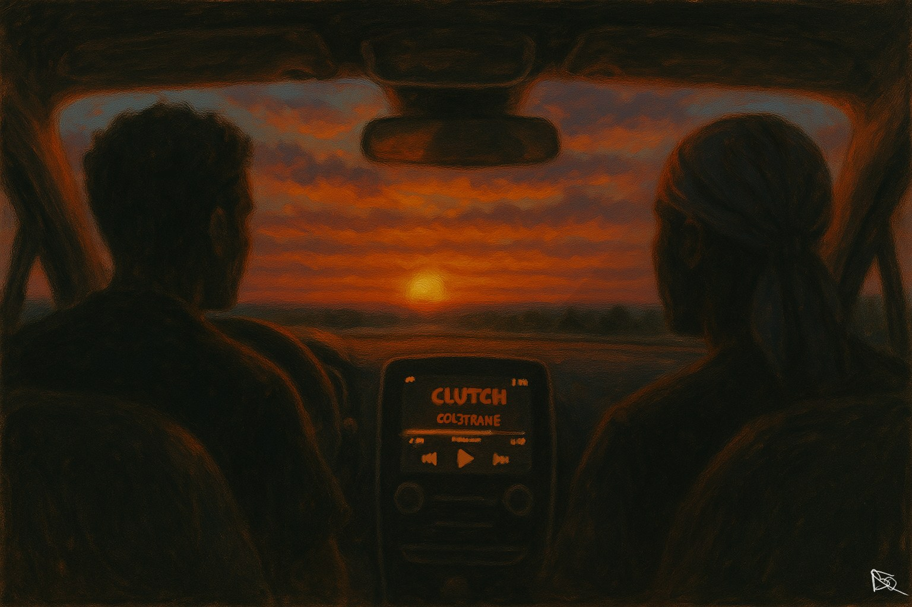
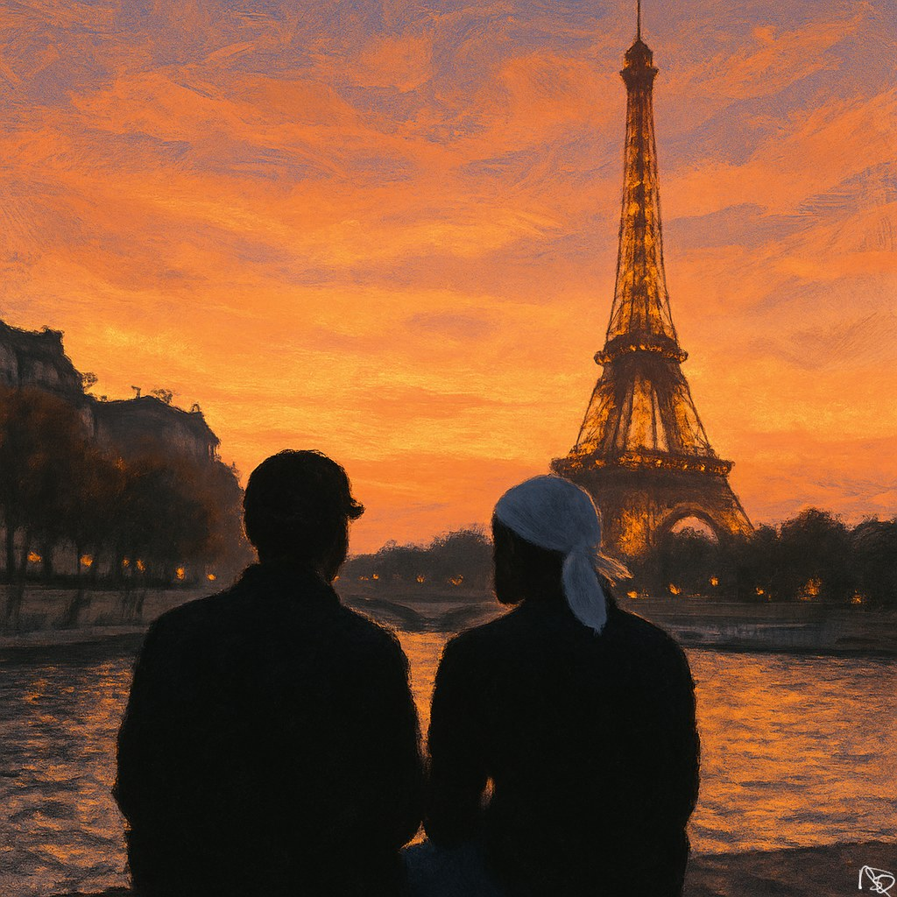
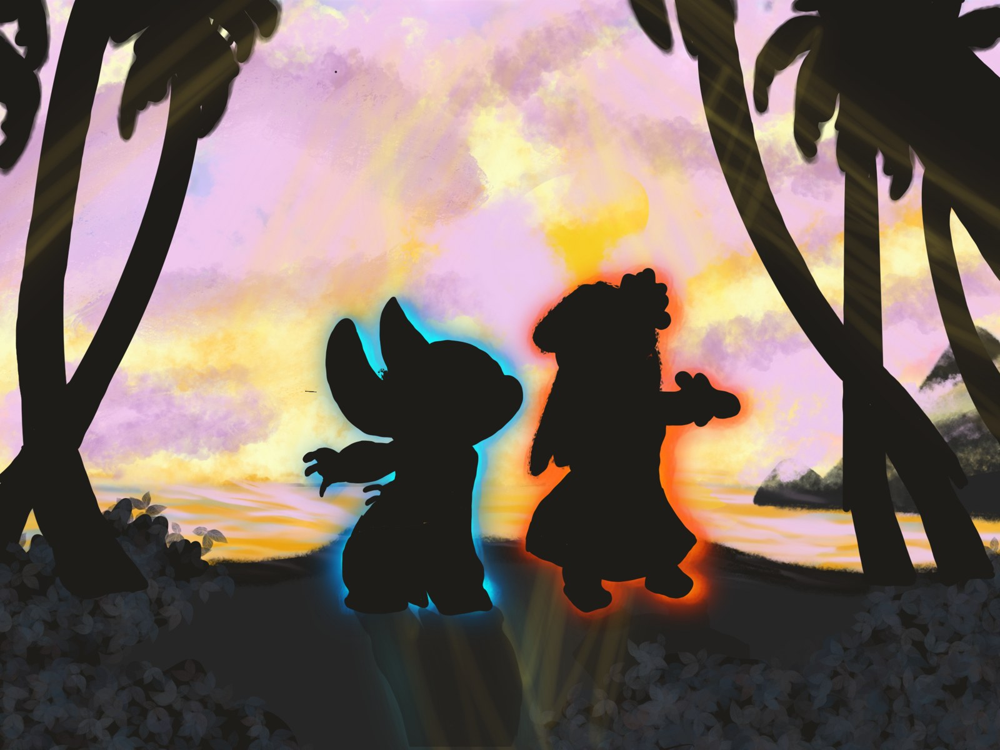

L'affichage des œuvres s'est interrompu.
Je suis un artiste numérique passionné, et toutes les œuvres présentées sur ce site sont des créations originales réalisées par moi sur Procreate. Chaque illustration est le fruit de nombreuses heures de réflexion, d’expérimentation et de travail, avec l’envie de transformer une idée en une image capable de transmettre une émotion.
Mon style évolue au fil de mes inspirations, mêlant créativité, imagination et souci du détail. Chaque œuvre possède sa propre identité, son histoire et son message, laissant à chacun la liberté de l’interpréter à sa manière.
Sur ce site, vous pourrez découvrir mes créations en haute qualité, explorer leur description, en apprendre davantage sur leur conception et suivre l’évolution de mon parcours artistique.
Art Is Art est plus qu’une galerie : c’est un espace où je partage ma vision de l’art numérique et mon évolution en tant qu’artiste.
Merci de prendre le temps de découvrir mon travail. J’espère que mes œuvres sauront vous inspirer, vous faire ressentir quelque chose ou simplement vous offrir un moment d’évasion.

MTH
Écouter l'album complet

Mon album sort le 20 novembre. Pré-sauvegardez-le pour l'avoir dès sa sortie sur votre plateforme préférée.


